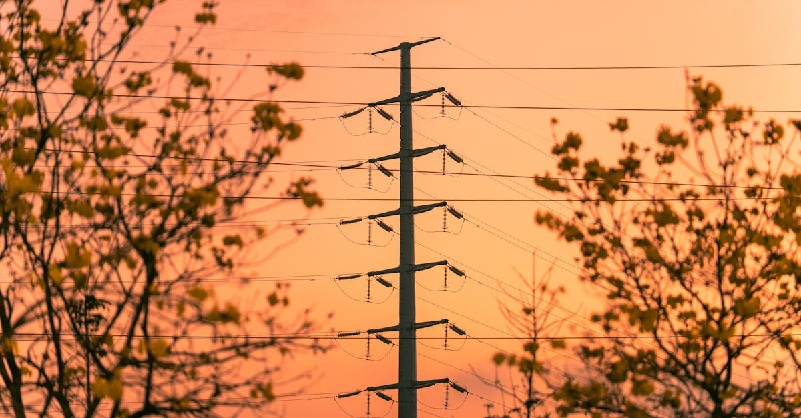

Le Grand Dilemme Indien : Au-delà des Figures Politiques
L'Inde, géant démographique et puissance économique montante, se trouve à un carrefour existentiel. C'est le constat implacable dressé par l'éminent auteur Amitav Ghosh, qui, selon Bloomberg Markets, estime que « le problème de l'Inde va au-delà de toute figure politique ». Cette observation percutante résonne avec une acuité particulière dans le monde de l'investissement, où la stabilité et la direction stratégique d'une nation sont des indicateurs cruciaux. Loin d'être un simple jugement sur un leader ou un parti, l'analyse de Ghosh pointe du doigt une quête d'identité profonde et complexe sur la scène internationale, un défi structurel qui façonne non seulement la politique intérieure mais aussi les perspectives économiques du pays.
👉 À lire : Pétrole: Un pipeline Irak-Turquie pour défier Hormuz et stabiliser les marchés
Depuis des décennies, l'Inde a cultivé une image de démocratie vibrante, de puissance technologique émergente et de contrepoids potentiel aux hégémonies régionales. Cependant, les réalités géopolitiques actuelles, marquées par une compétition continentale féroce avec des acteurs comme la Chine, la Russie et l'Iran, brouillent cette trajectoire. Les investisseurs, qu'ils soient institutionnels ou individuels, scrutent avec attention cette incertitude. Comment une nation peut-elle définir son rôle lorsque les pressions externes et les défis internes s'entremêlent de manière si inextricable ? Cette interrogation est d'autant plus pertinente que l'Inde est souvent perçue comme un moteur essentiel des marchés émergents. La capacité de l'Inde à naviguer ces eaux troubles aura des répercussions bien au-delà de ses frontières, influençant les chaînes d'approvisionnement mondiales, les flux de capitaux et, in fine, la performance de nombreux portefeuilles d'investissement.
👉 À lire : Malaisie: Un Nouveau Chef Anti-Corruption et l'Avenir des Placements
Les défis internes sont légion : une démographie galopante nécessitant une création d'emplois massive, des infrastructures qui peinent à suivre le rythme de la croissance, et des inégalités sociales persistantes. Ces facteurs, combinés aux pressions géopolitiques, créent un environnement d'investissement où la vigilance et l'analyse de données en temps réel deviennent non seulement un avantage, mais une nécessité. Comme le souligne Dr. Anya Sharma, analyste géopolitique chez Global Insights Labs,
« L'Inde est à la croisée des chemins, non pas d'une crise de leadership, mais d'une crise d'identité stratégique dans un monde en pleine mutation. Les investisseurs doivent comprendre que la complexité indienne est désormais la norme, pas l'exception. »Comprendre ces dynamiques est la première étape pour tout épargnant souhaitant optimiser ses placements dans un contexte mondial de plus en plus volatil.
La Pression Continentale : Chine, Russie, Iran et l'Équilibre des Forces
Le positionnement de l'Inde est intrinsèquement lié aux puissances qui l'entourent. La Chine, son voisin le plus imposant, représente à la fois un partenaire commercial vital et un rival stratégique majeur. Les tensions frontalières récurrentes, la concurrence économique féroce en Asie du Sud-Est et l'initiative chinoise de la « Nouvelle Route de la Soie » (Belt and Road Initiative) qui encercle l'Inde, ne sont que quelques-uns des points de friction. Cette dynamique sino-indienne est une épée de Damoclès pour les marchés, car toute escalade pourrait avoir des conséquences économiques dévastatrices, affectant les chaînes d'approvisionnement et la confiance des investisseurs régionaux et mondiaux.
La Russie, partenaire historique de l'Inde en matière de défense et d'énergie, voit son influence géopolitique se redessiner. Alors que l'Inde a longtemps bénéficié d'une relation privilégiée avec Moscou, les récents alignements de la Russie avec la Chine et l'Iran, notamment dans le contexte de la guerre en Ukraine, posent de nouvelles questions. L'Inde se retrouve à devoir jongler entre ses liens traditionnels et les pressions des puissances occidentales. Cette équation complexe impacte les décisions d'achat d'armements, les accords énergétiques et, par extension, la diversification économique de l'Inde. Un réalignement stratégique pourrait ouvrir de nouvelles opportunités ou, au contraire, créer des dépendances non souhaitées.
Enfin, l'Iran, acteur clé au Moyen-Orient, représente pour l'Inde une source d'énergie potentielle et une porte d'accès vers l'Asie centrale via le port de Chabahar. Cependant, les sanctions internationales imposées à l'Iran compliquent cette relation, forçant l'Inde à naviguer avec prudence pour ne pas s'aliéner ses partenaires occidentaux. Cette situation crée une incertitude sur l'approvisionnement énergétique indien et sur ses stratégies de connectivité régionale. La capacité de l'Inde à maintenir un équilibre délicat entre ces puissances – parfois alliées, parfois rivales – est un facteur déterminant pour sa stabilité économique. Pour l'investisseur, cela signifie que les marchés indiens ne peuvent être évalués sans une compréhension approfondie de ces dynamiques géopolitiques changeantes. La volatilité est souvent le corollaire d'une telle complexité, exigeant des outils d'analyse sophistiqués pour identifier les risques cachés et les opportunités émergentes.
Les Répercussions Économiques des Ambitions Géopolitiques
La quête de l'Inde pour définir son rôle mondial n'est pas une abstraction politique ; elle a des implications très concrètes sur son économie et sur les marchés financiers. Les tensions géopolitiques peuvent entraîner des interruptions des chaînes d'approvisionnement, comme on l'a vu avec la pandémie et les conflits récents, ce qui affecte directement les secteurs manufacturiers et exportateurs. Par exemple, une détérioration des relations avec la Chine peut freiner l'accès de l'Inde à des composants essentiels ou à des marchés d'exportation cruciaux, impactant des industries clés telles que l'automobile, l'électronique ou le textile. En 2023, les échanges bilatéraux entre l'Inde et la Chine ont dépassé les 100 milliards de dollars, soulignant l'interdépendance malgré les frictions.
L'incertitude géopolitique décourage également l'investissement direct étranger (IDE). Les entreprises internationales hésitent à s'implanter ou à étendre leurs opérations dans des régions perçues comme instables ou soumises à des risques politiques élevés. Une étude récente de la Banque Mondiale a montré que les pays avec un indice de risque géopolitique élevé tendent à attirer 15% d'IDE en moins sur le long terme. Pour l'Inde, qui a besoin de capitaux étrangers pour financer son développement infrastructurel et technologique, cette réticence peut ralentir la croissance économique et limiter la création d'emplois. Les investisseurs locaux, eux aussi, peuvent devenir plus prudents, préférant des actifs jugés plus sûrs, ce qui peut drainer les capitaux des secteurs productifs.
De plus, les choix stratégiques de l'Inde en matière d'alliances peuvent influencer ses relations commerciales avec d'autres blocs économiques. Si l'Inde privilégie certains partenaires, elle risque de s'attirer les foudres d'autres, pouvant se traduire par des barrières tarifaires, des restrictions commerciales ou des pressions diplomatiques. Ces facteurs introduisent une volatilité non négligeable sur les marchés boursiers et obligataires indiens. Les secteurs sensibles aux importations et exportations, tels que l'énergie, la technologie de l'information ou la pharmacie, sont particulièrement vulnérables. Pour Madame Léa Dubois, économiste spécialisée dans les marchés émergents,
« Les investisseurs avisés ne peuvent plus se contenter d'une analyse statique ; la dynamique géopolitique est désormais un facteur de risque et d'opportunité de premier ordre, exigeant une réactivité et une capacité d'adaptation sans précédent. »La performance future des investissements en Inde dépendra donc largement de la manière dont le pays naviguera ces eaux économiques et politiques complexes.

Naviguer l'Incognito : L'Inde et la Quête d'une Identité Mondiale
La difficulté de l'Inde à se définir sur la scène mondiale n'est pas nouvelle, mais elle est exacerbée par la reconfiguration rapide de l'ordre international. Est-elle destinée à être un contrepoids démocratique à l'autoritarisme croissant de la Chine ? Doit-elle se positionner comme un leader du Sud global, défendant les intérêts des nations en développement ? Ou est-elle une puissance émergente avant tout axée sur ses propres intérêts économiques et sécuritaires ? Ces questions complexes n'ont pas de réponses simples et divisent les élites politiques et intellectuelles indiennes. Cette quête d'identité se manifeste par une politique étrangère parfois perçue comme ambivalente, jonglant entre l'appartenance au QUAD (dialogue stratégique avec les États-Unis, le Japon et l'Australie) et le maintien de liens forts avec des pays comme la Russie et l'Iran, souvent en désaccord avec les positions occidentales.
Cette approche, souvent qualifiée d'« autonomie stratégique », permet à l'Inde de maximiser ses options et de ne pas s'enfermer dans un seul camp. Cependant, elle présente aussi des inconvénients. Elle peut rendre la position indienne difficile à interpréter pour ses partenaires, créant une certaine imprévisibilité. Pour les investisseurs, cette incertitude stratégique peut se traduire par des difficultés à anticiper les politiques commerciales, les régulations et les alliances futures de l'Inde. Un changement d'orientation diplomatique, même subtil, peut avoir des répercussions significatives sur des secteurs économiques spécifiques, comme la défense, l'énergie ou les technologies de pointe, qui dépendent fortement des accords intergouvernementaux.
La capacité de l'Inde à articuler une vision claire et cohérente de son rôle mondial sera cruciale pour son attractivité à long terme. Une identité forte et prévisible inspire confiance, tandis qu'une position fluctuante peut générer de l'appréhension.
« L'Inde doit trouver sa voix unique dans le concert des nations, une voix qui soit à la fois ancrée dans ses valeurs démocratiques et pragmatique face aux réalités géopolitiques », affirme le professeur Rajeev Gupta, expert en relations internationales à l'Université de Delhi. « C'est un processus douloureux mais nécessaire pour consolider sa place et rassurer les marchés. »Cette dynamique de recherche d'identité nationale est un miroir des défis que rencontrent les épargnants : comment définir sa stratégie d'investissement dans un environnement en constante évolution, sans se laisser submerger par le bruit et l'incertitude ? La réponse réside souvent dans la capacité à s'adapter et à utiliser des outils intelligents pour éclairer les décisions.
L'Impact sur les Marchés Émergents et l'Investisseur Averti
Les défis géopolitiques de l'Inde ne sont pas isolés ; ils sont emblématiques des complexités inhérentes à l'investissement dans les marchés émergents. Ces marchés sont souvent caractérisés par un potentiel de croissance élevé, mais aussi par une volatilité accrue due à des facteurs politiques, sociaux et économiques. La situation indienne rappelle que l'analyse des fondamentaux économiques ne suffit plus. Une compréhension nuancée des dynamiques géopolitiques, des risques régionaux et des alignements internationaux est désormais indispensable pour toute stratégie d'investissement réussie dans ces régions.
Pour l'investisseur averti, qu'il s'agisse d'un professionnel de la finance ou d'un particulier soucieux d'optimiser son épargne, l'imprévisibilité des marchés émergents comme l'Inde nécessite des outils d'analyse et de gestion des risques à la pointe de la technologie. Les fluctuations monétaires, les changements de politique réglementaire, les tensions commerciales et les conflits locaux ou régionaux peuvent impacter significativement la performance d'un portefeuille en quelques heures. Par exemple, une simple déclaration diplomatique ou un incident frontalier peut provoquer une chute rapide des indices boursiers, comme le Sensex ou le Nifty 50, et entraîner des pertes substantielles pour les investisseurs non préparés.
Dans un tel environnement, la capacité à traiter et à interpréter des volumes massifs de données provenant de sources diverses – actualités économiques, rapports géopolitiques, données de marché en temps réel, analyses de sentiment – devient un avantage compétitif majeur. C'est précisément là que l'intelligence artificielle trouve sa pleine mesure. Un système d'IA peut surveiller 24h/24 les événements mondiaux, identifier les corrélations complexes entre les facteurs géopolitiques et les performances des actifs, et anticiper les mouvements du marché avec une précision que l'analyse humaine seule ne peut égaler.
« Dans un monde où les lignes bougent si rapidement, la capacité à analyser des volumes massifs de données pour anticiper les tendances devient un atout inestimable », explique Dr. Émilie Moreau, experte en finance quantitative. « C'est ici que l'approche intelligente et automatisée de l'épargne prend tout son sens, transformant le risque en opportunité maîtrisée. »Pour l'épargnant, cela signifie la possibilité de ne pas simplement réagir aux événements, mais d'anticiper et d'ajuster ses placements de manière proactive, minimisant les risques tout en maximisant les rendements potentiels.

L'Innovation Technologique : Un Levier pour l'Inde et pour l'Investisseur
Paradoxalement, au cœur des défis géopolitiques de l'Inde réside également un immense potentiel : son dynamisme technologique. L'Inde est un pôle mondial de l'ingénierie logicielle, des services informatiques et des startups, avec des villes comme Bangalore et Hyderabad reconnues comme des hubs d'innovation. Cette force technologique pourrait être un levier puissant pour l'Inde afin de surmonter certains de ses obstacles. Par exemple, l'adoption massive de la numérisation et de l'intelligence artificielle dans les infrastructures, l'agriculture ou l'éducation pourrait améliorer la productivité, réduire les inégalités et renforcer sa position économique face à ses rivaux.
Sur le plan géopolitique, l'innovation technologique offre à l'Inde des opportunités de partenariat stratégiques avec des pays avancés, notamment dans les domaines de la cybersécurité, de l'IA et de la défense. Ces collaborations peuvent renforcer ses alliances et lui donner un avantage compétitif dans des secteurs clés. Le développement d'une industrie de semi-conducteurs nationale, par exemple, pourrait réduire sa dépendance vis-à-vis de l'étranger et sécuriser ses chaînes d'approvisionnement, un enjeu critique dans le contexte actuel de pénuries mondiales. L'Inde a alloué des milliards de dollars pour attirer les investissements dans ce secteur, démontrant une volonté politique forte de devenir un acteur majeur de la technologie mondiale.
Pour l'investisseur, cette dynamique technologique indienne représente une source d'opportunités significative. Les entreprises indiennes innovantes, notamment dans les secteurs de la fintech, de la santé numérique et des énergies renouvelables, sont en pleine croissance et offrent des perspectives de rendements attrayants. Cependant, identifier les pépites et naviguer les complexités du marché indien exige une expertise pointue. C'est ici que l'intelligence artificielle redevient un allié indispensable. Si l'Inde elle-même cherche à utiliser l'IA pour optimiser sa stratégie nationale, pourquoi les investisseurs ne feraient-ils pas de même pour leur propre épargne ?
Un agent IA peut non seulement analyser les données financières, mais aussi contextualiser les informations géopolitiques et technologiques pour identifier les secteurs et les entreprises les plus résilients et prometteurs. Un tel système peut par exemple détecter l'impact des politiques gouvernementales sur les startups technologiques, ou évaluer le risque lié aux tensions frontalières sur les entreprises exportatrices.
« L'IA n'est plus un luxe, mais une nécessité pour quiconque souhaite naviguer avec succès les marchés émergents. Elle démocratise l'accès à une analyse de pointe », affirme Monsieur Marc Fournier, expert en IA financière. « Un agent intelligent capable de surveiller les marchés 24h/24, 7j/7, pour ajuster les placements en temps réel, n'est plus une fiction, mais une réalité accessible. »En tirant parti de ces innovations, l'épargnant peut transformer les défis d'un marché complexe comme l'Inde en opportunités d'investissement optimisées et sécurisées.
Conclusion : Investir Intelligemment dans un Monde Incertain
L'analyse d'Amitav Ghosh, soulignant que les défis de l'Inde dépassent largement la portée d'une seule figure politique, met en lumière une vérité universelle : les forces géopolitiques et structurelles sont des déterminants majeurs de la trajectoire d'une nation et, par extension, de ses marchés financiers. L'Inde, avec sa quête complexe d'identité mondiale au milieu de la compétition continentale, est un cas d'étude fascinant et un baromètre des défis auxquels sont confrontés tous les marchés émergents. La volatilité, l'incertitude et la complexité sont les nouvelles normes, et les investisseurs qui s'y adaptent seront ceux qui prospéreront.
Pour l'épargnant soucieux de protéger et de faire fructifier son capital dans ce paysage en constante évolution, la réponse ne réside pas dans l'évitement du risque, mais dans sa gestion intelligente et proactive. Attendre que les nuages géopolitiques se dissipent pour investir est une stratégie obsolète. Au contraire, il s'agit d'embrasser la complexité, de comprendre les interconnexions et d'utiliser les outils les plus avancés pour prendre des décisions éclairées. L'époque où l'on pouvait se contenter d'une analyse rudimentaire ou d'un simple suivi des actualités est révolue. Les marchés d'aujourd'hui exigent une vigilance constante et une capacité d'adaptation fulgurante.
C'est précisément dans ce contexte que l'approche de l'épargne intelligente et de l'investissement automatisé par IA prend tout son sens. Imaginez un système capable de digérer des téraoctets de données, des rapports géopolitiques aux micro-tendances économiques, des fluctuations monétaires aux sentiments du marché, et de traduire tout cela en ajustements de portefeuille en temps réel. Un tel Agent IA, optimisant votre épargne et vos placements 24h/24, n'est pas seulement un avantage concurrentiel ; c'est une nécessité pour naviguer les mers agitées de l'investissement moderne. Il offre la tranquillité d'esprit de savoir que vos finances sont gérées avec la plus grande sophistication, vous permettant de vous concentrer sur ce qui compte vraiment, tandis que la technologie veille sur votre avenir financier. Dans un monde où les nations luttent pour définir leur rôle, les investisseurs peuvent, grâce à l'IA, définir le leur avec confiance et efficacité.